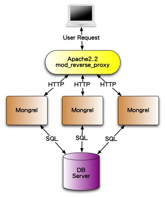

本書尚未完成，如果您有任何意見、鼓勵或勘誤，歡迎來信給我，謝謝。
終於要脫離開發階段，要把完成的Ruby on Rails應用程式拿來出上線見人了。在rails server指令中，其實是使用一套叫做WEBrick的伺服器，這是一套純Ruby實作的HTTP伺服器。雖然開發時拿來用很方便，但是它的效能並不適合作為正式環境來使用。因此，我們在這一章將介紹幾種在Linux上實際作為Production用途的佈署方案。
雖然Rails在Windows平台上也可以執行開發，但是如第二章作業系統一節所說，Ruby在Windows平台上資源較少，效能也不如在Unix-like系統上，因此很少人拿來當做Production伺服器用途。因此本章將不介紹如何在Windows上佈署，有興趣的朋友可以參考Deploying Rails Application: A Step-by-Step Guide一書第八章。
Passenger又叫做mod_rails，是目前佈署Ruby on Rails最好用、設定最簡單的方式，它是一套Apache和Nginx的擴充模組，可以直接支援Rails或任何Rack應用程式。
Passenger不支援Windows平台
首先先來介紹怎麼搭配Apache。Apache是一套功能非常豐富、非常多人使用的開放原始碼 HTTP 伺服器，在Ubuntu (10.04)上安裝Apache+Passenger指令如下：
$ sudo apt-get install -y apache2-mpm-prefork apache2-prefork-dev libapr1-dev libaprutil1-dev libcurl4-openssl-dev
$ sudo gem install passenger
$ sudo passenger-install-apache2-module執行完passenger-install-apache2-module後會有一段設定，請將此設定加入/etc/apache2/conf.d/mod_rails檔案之中，例如：
passenger_module /usr/local/lib/ruby/gems/1.8/gems/passenger-3.0.7/ext/apache2/mod_passenger.so
PassengerRoot /usr/local/lib/ruby/gems/1.8/gems/passenger-3.0.7
PassengerRuby /usr/local/bin/ruby假設你的Rails專案放在/home/ihower/your_rails_app目錄下，那麼可以新增/etc/apache2/sites-enabled/your_rails_app.conf這個專案的設定，例如：
<VirtualHost *:80>
ServerName www.yourhost.com
DocumentRoot /somewhere/public
<Directory /somewhere/public>
AllowOverride all
Options -MultiViews
</Directory>
</VirtualHost>接著輸入以下指令就會重新啟動Apache：
$ sudo apache2ctl restart注意到DocumentRoot和Directory是指向public這個靜態檔案的目錄。設定好之後，執行sudo apache2ctl restart便會啟用。如果之後你的Rails有任何修改要重新載入，但是並不想把Apache重開，請在你的Rails應用程式目錄下執行touch tmp/restart.txt即可，這樣Passenger就會知道要重新載入Rails，而不需要重開Apache。
Passenger預設的Rails運行環境是production。在production環境下操作Rails指令有些必須加上環境變數，例如
rake db:migrate RAILS_ENV=production或是主控台rails console production
Nginx則是另一套在Rails世界上還蠻常被使用的第二選擇，相較於Apache雖然功能較少，但執行效率更為良好。要讓Nginx裝上Passgener不需要先裝Nginx，只需要執行以下指令：
$ sudo passenger-install-nginx-module這是因為Passenger必須與Nginx一起編譯的關係，所以Passenger的安裝指令就包括了安裝Nginx。安裝完成之後，編輯/opt/nginx/conf/nginx.conf這個設定，將server那段改寫成如下：
server {
listen 80;
server_name www.yourhost.com;
root /somewhere/public;
passenger_enabled on;
}反向代理(Reverse proxy)模型就比較複雜了，它分成Web伺服器和應用程式伺服器，圖示如下：

其中Web伺服器可以是Apache、Nginx，但是它除了提供靜態檔案之外，其餘的任務就只是做reverse proxy將request分發到應用程式伺服器。
而應用程式伺服器負責執行Ruby on Rails程式，這有幾個選擇：
相較於Passenger，設定上會比較複雜。
Passenger和Unicorn都是屬於Multi-process的模型，每一個Process是一個完整的Rails app使用一個CPU core。這種模型的優點是應用程式撰寫容易，不用管執行序是否安全的問題(Thread-safety)問題，而且如果每個Request都沒有I/O blocking，利用的CPU效率就是最好的，因為不像Thread有Context switch。但是，最大的缺點是如果碰到I/O blocking(太容易了，最基本的連接資料庫就是一種相較於CPU是很慢的I/O操作)，能同時負擔的連線就很容易受到限制。因此在這種模型下，開發都會建議你監控每個HTTP request的執行時間在某個ms標準以下(例如20ms)，太久的操作就會建議是改用Background job，這就是為了可以確定伺服器的執行效率。因此雖然”同時”連線線就等於能用的Process數量(例如最基本512 mb的主機上，通常可以開3個Rails process，但是因為每個連線都控制在20ms以下，所以每秒鐘能處理的requests數量還是十分驚人，足以應用絕大部分的應用場景。
這個無法應用的場景，就是大量的HTTP持續連線需求了，例如聊天室，每個使用者連線持續佔用Process，而大多時間都在等待，導致伺服器能同時提供的連線非常有限。
要對應這種需求，一般人可能直覺聯想到的方案就是使用Multi-threaded了，雖然Rails本身有支援了config.threadsafe!模式，但是Multi-threaded的模型在Rails社群中其實並不流行，撇開multi thread程式的複雜性不談，主因應是對付這種concurrency需求，最有效的方案不是Multi-threaded，而是Evented-driven的 Actor model。Thread再怎麼便宜，同時開成千上萬個也是會痛的，而Actor model是一個無窮loop，無論有多少連線，只有在有事件發生時，才會讓CPU做事。Ruby中實作此模型最出名的函式庫就叫做EventMachine。
要讓Rails採用evented-driven架構，除了要用Thin server(使用EventMachine)之外，所有有關I/O操作的函式庫都要換用evented版本，例如HTTP client等等，不然也是功虧一簣。如何設定，可以參考這一個Demo app https://github.com/igrigorik/async-rails
不過，因為Rails的設計並不是以Evented模型為最高指導原則，所以實務上比較多人會偏好採用更輕量，更以Evented為原則的框架來專門處理需要大量非同步連線的情景，例如：
更多爭論可以參考 Does Rails Performance Need an Overhaul?
http://merbist.com/2011/02/22/concurrency-in-ruby-explained/
決定應用程式伺服器之後，接下來我們來討論你要如何把程式佈署上去？最常見的作法，不就是開個FTP或用SFTP上傳上去不就好了？再不然SSH進去，從版本控制系統更新下來也可以。但是你有沒有想過這佈署的過程，其實是每次都重複一再執行的步驟(除非你佈署完之後，就不需要再繼續開發和升級)，隨者時間的演進，這個過程常常會有各種客製的指令需要要執行，例如安裝設定檔、更新啟動某個Daemon、清除快取等等。因此，好的實務作法是自動化佈署這個動作，只要執行一個指令，就自動更新上去並重新啟動伺服器。這樣也可以大大避免漏做了什麼佈署步驟的可能性。
Capistrano是Rails社群中最常使用的佈署工具。首先，我們來安裝這個Gem：
sudo gem install capistrano在你的Rails專案目錄下執行：
capify .這樣就會產生幾個檔案，打開config/deploy.rb就是設定檔，以下是一個範例：
require 'bundler/capistrano'
# require 'hoptoad_notifier/capistrano'
set :application, "your-project-name"
set :branch, "master"
set :repository, "git@github.com:ihower/your-project-name.git"
set :scm, "git"
set :user, "rails" # 一個伺服器上的帳戶用來放你的應用程式，不需要有sudo權限，但是需要有權限可以讀取Git repository拿到原始碼
set :port, "22"
set :deploy_to, "/home/rails"
set :deploy_via, :remote_cache
set :use_sudo, false
role :web, "111.222.333.444"
role :app, "111.222.333.444"
role :db, "111.222.333.444", :primary => true
namespace :deploy do
task :copy_config_files, :roles => [:app] do
db_config = "#{shared_path}/database.yml"
run "cp #{db_config} #{release_path}/config/database.yml"
end
task :update_symlink do
run "ln -s {shared_path}/public/system {current_path}/public/system"
end
task :start do ; end
task :stop do ; end
task :restart, :roles => :app, :except => { :no_release => true } do
run "#{try_sudo} touch #{File.join(current_path,'tmp','restart.txt')}"
end
end
# after "deploy:update_code", "deploy:copy_config_files" # 如果將database.yml放在shared下，請打開
# after "deploy:finalize_update", "deploy:update_symlink" # 如果有實作使用者上傳檔案到public/system，請打開設定好伺服器的資料之後，在本地端輸入：
cap deploy:setup就會自動登入遠端的伺服器，在登入的帳號下新建current、releases和shared這三個目錄，releases是每次佈署的紀錄，而current目錄則是用symbolic link指向releases目錄下最新的版本。而通常我們不希望將資料庫的帳號密碼也放進版本控制系統，所以會將存有正確帳號密碼的database.yml檔案預先放在伺服器的shared目錄下，然後在佈署時在覆蓋過去，也就是上述copy_config_files所執行的動作。如果有使用者上傳的功能，並將檔案放在public/system下，因為每次佈署都會重新建立新的release目錄，所以也是用symbolic link的方式，在佈署時建立即可，也就是上述的update_symlink的動作。
接著，讓我們第一次佈署(也是在本地端執行)：
cap deploy:cold伺服器上的帳號需要有可以git clone專案的讀取權限。
這樣會從版本控制系統拉出最新版本，並且執行Migration。之後要佈署，只需要執行
cap deploy就可以了。這些操作都是在本地端執行。基本上除了第一次安裝的時候，你會需要手動SSH登入伺服器看看之外，之後的部署你都不再需要SSH進去就可以完成，非常方便。
capistrano_ext gem可以支援多個佈署設定檔
http://blog.railsware.com/2011/11/02/advanced-server-definitions-in-capistrano/
網站持續運作，log目錄下的production.log可是會越長越肥，因此需要定期整理備份，這裡有幾種方法，一種是修改config/environments/production.rb的設定：
config.logger = Logger.new(config.paths["log"].first, 'daily') # 或 weekly,monthly或是
config.logger = Logger.new(config.paths["log"].first, 10, 10*1024*1024) # 10 megabytes 不然，你也可以使用Linux內建的logrotate工具。
可以參考這篇文章The Best Ruby on Rails Hosting Services，這些服務可以概分為:
相較於PHP，Rails是比較耗費資源的，所以不推薦Shared Host等級。
以上的租用方式都是以月來計算，比較沒有彈性。如果需要以小時計算、租用資源非常彈性的服務，那就是雲端了：
1.安裝Heroku套件
sudo gem install heroku2. 在你的Rails目錄下執行
heroku create your_app_name如果是Windwos使用者，Heroku可能會無法正確找到你的public key位置，請執行以下步驟手動上傳
heroku keys:add "%homedrive%%homepath%/.ssh/id_rsa.pub"。
1. 發佈程式到 Heroku 上
git push heroku master 2. 第一次發佈或有新Migration需要執行時
heroku rake db:migrate參考Why? 主動攔截 Rails exception 錯誤